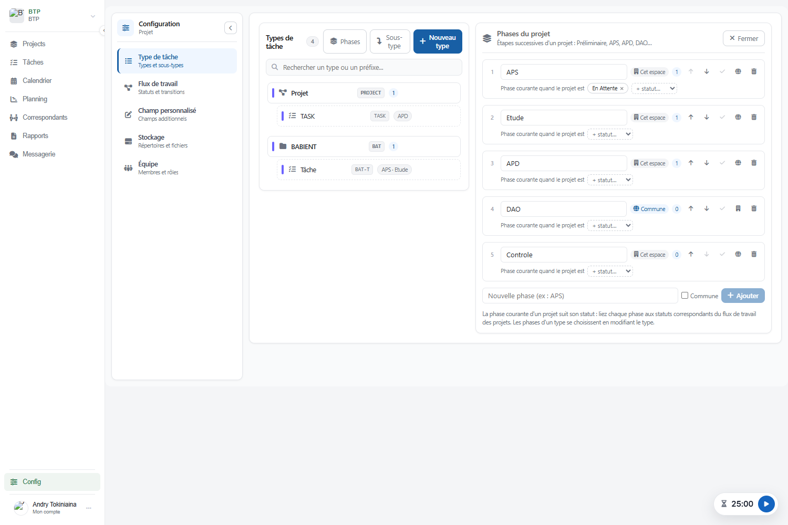
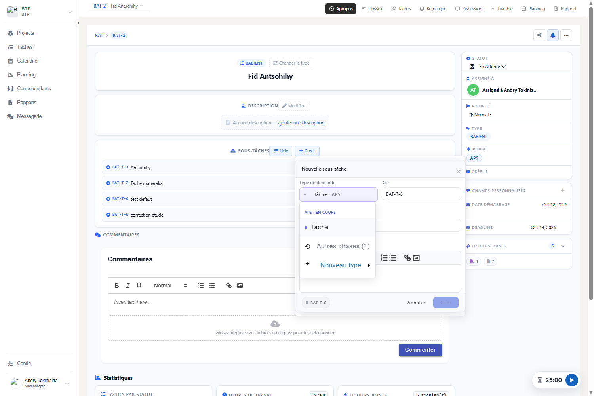
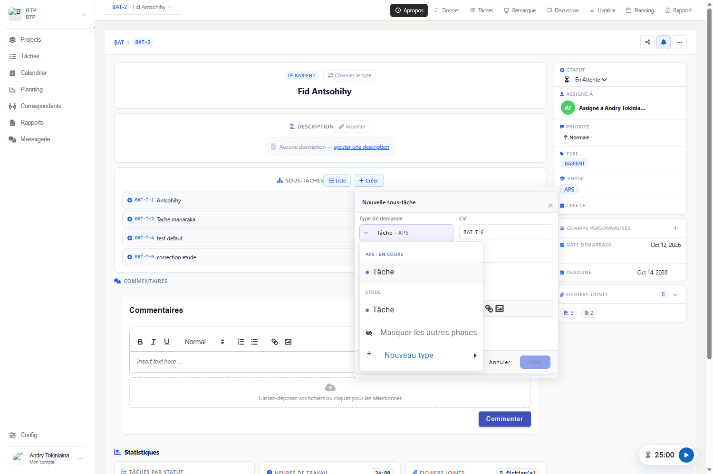
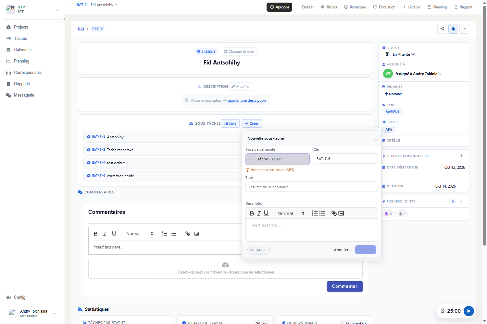
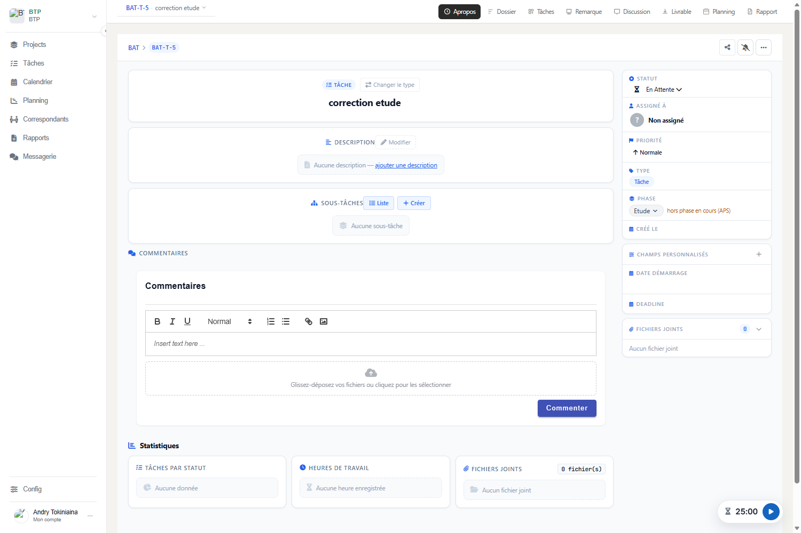

Phase courante lue sur le statut du projet, phases des types de tâche, phase de chaque tâche.
| Référence | DT-001 (Document Technique n° 001) |
| Version de l'application | 2.0.8 |
| Date | 15 octobre 2026 |
| Domaine | Bureau d'études en génie civil ; réutilisable dans tout domaine organisé en étapes |
| Commits liés |
2bde14c Phases 1/5 (DT-001) : modèle, règles, GraphQL, reprise des donnéesaecba6e Phases 2/5 (DT-001) : paramétrage des phases et phases d'un typef061683 Phases 3/5 (DT-001) : création d'une sous-tâche selon la phase en coursa197fb3 Phases 4/5 (DT-001) : phase dans le détail d'une tâche et dans le Ganttdocs Phases 5/5 (DT-001) : ce document
|
| Précédent | 153797a Phases : groupes de types de tâche (un type, une phase) |
Dans un bureau d'études, un projet passe par des phases successives :
Les sous-tâches traitées dépendent de la phase : certains types de tâche n'existent que dans une phase (un relevé en Préliminaire), d'autres servent dans plusieurs (une note de calcul en APS et en APD). À la création d'une sous-tâche, la liste des types doit cadrer les équipes sur la phase en cours, tout en restant flexible pour deux exceptions courantes :
Le statut du projet (la demande racine) n'était pas exploité : il devient le porteur de la phase en cours.
| Principe | Conséquence |
|---|---|
| La phase en cours se lit sur le statut du projet | Pas de champ en double : le flux de travail du type « Projet » (Préliminaire → APS → APD → DAO → Contrôle) donne l'ordre des phases, et ses transitions autorisent les retours en arrière. |
| Lien explicite phase ↔ statut | Aucune reconnaissance par le libellé : renommer un statut, changer de langue ou de domaine ne casse rien. |
| Un statut désigne une seule phase | La phase en cours est toujours unique. Une phase peut avoir plusieurs statuts (un par flux de travail). |
| Portée : phase d'un espace ou commune | Les mêmes phases (APS, APD…) se définissent une fois pour tous les espaces de travail ; un espace peut ajouter les siennes. Même logique que la portée des champs personnalisés. |
| La phase d'une tâche est fixée à la création et gardée | Une correction d'APS faite pendant l'APD reste comptée en APS, dans le Gantt comme dans les rapports. |
| Proposer, ne pas interdire | La liste des types montre d'office la phase en cours ; les autres phases restent accessibles d'un clic. |
| Élément | Table / colonne | Rôle |
|---|---|---|
Phase.project | phase.project_id (désormais NULL possible) | Espace de la phase ; vide pour une phase commune. |
Phase.position | phase.position | Rang dans le déroulement du projet. |
Phase.statuses | phase_status(phase_id, status_id) | Statuts du projet pendant lesquels la phase est en cours. |
IssueType.phases | issue_type_phase(issue_type_id, phase_id) | Phases où le type est proposé. |
Issue.phase | issue.phase_id | Phase où la tâche est classée. |
IssueType.legacyPhase | issuetype.phase_id | Ancienne phase unique, lue une fois par la reprise puis vidée. |
La phase courante est celle liée au statut de la demande racine, parmi les phases visibles dans son espace (les siennes et les communes), dans l'ordre du projet. Une tâche de n'importe quel niveau lit le statut de sa racine.
AffectationPhase.phaseInitiale. Le formulaire envoie toujours la phase de l'entrée choisie ; les règles suivantes servent aux autres clients (ancienne fenêtre, application mobile).setIssuePhase classe la tâche dans une autre phase de son type.
Un type à phases exige une phase ; un type sans phase n'en accepte aucune.La requête typesSousTacheParPhase(parentIssueId) renvoie une entrée par couple (type, phase) :
un type utilisé dans deux phases donne deux entrées. Choisir une entrée fixe le type et la phase.
tasks-service)| Classe | Responsabilité |
|---|---|
service/phase/ResolveurPhaseCourante | Contrat : dans quelle phase est un projet. Une autre règle (champ personnalisé, dates du planning) se branche sans toucher aux appelants. |
service/phase/PhaseCouranteParStatut | Implémentation : statut de la racine → phase liée, parmi les phases visibles de l'espace. |
service/phase/AffectationPhase | Règles pures : phase initiale, phase après changement de type, contrôle d'un choix. |
service/phase/PhaseTacheService | Transactions autour des règles : liste des types proposés, phase initiale/actuelle, setIssuePhase. |
service/phase/PhaseStatutService | Statuts candidats d'un espace, lier / délier (un statut, une phase). |
service/PhaseService | Phases : création, renommage, portée, ordre, suppression, phases d'un type. |
service/phase/PhaseReprise | Reprise des données de la première version, au démarrage. |
config/PhaseProjetFacultatif | Assouplit phase.project_id au démarrage (Hibernate ne le fait pas). |
dto/ChoixTypeSousTache, TypesSousTacheParPhase, PhaseSaisie | Échanges GraphQL. |
tasks-front)| Fichier | Responsabilité |
|---|---|
services/phase.service.ts | Seul accès GraphQL aux phases (remplace les méthodes de phase d'IssueService). |
type/phase.operations.ts | Requêtes et mutations GraphQL des phases. |
type/phase.util.ts | Calculs purs : noms des phases d'un type, ordre, statuts libres, comptages. |
type/choix-type-sous-tache.util.ts | Calculs purs du menu de création : groupes par phase, entrées masquées, choix par défaut. |
config-project/issue-type2/phase-manager/ | Écran de paramétrage des phases. |
common/issutype-form2/ | Formulaire d'un type : choix multiple des phases. |
common/new-issue-form/ | Création : menu des types groupé par phase, « Autres phases ». |
common/phase-field/ | Phase dans le détail d'une demande (projet : en cours ; tâche : modifiable). |
direction/gantt-projets/gantt-regroupement.ts | « Grouper par phase » lit la phase de la tâche. |
type Phase { id name project commune position statuses issueTypes }
type ChoixTypeSousTache { issueType phase proposee }
type TypesSousTacheParPhase { phaseCourante choix }
extend type IssueType { phases phase @deprecated }
extend type Issue { phase phaseCourante }
extend input IssueInput { phase } # à la création seulement
phasesByProject(projectId) # phases de l'espace + communes, dans l'ordre
statutsProjetPourPhases(projectId) # statuts des flux des types « projet »
typesSousTacheParPhase(parentIssueId)
savePhase(phase: {id name project commune})
deletePhase(phaseId)
ordonnerPhases(phaseIds)
lierStatutPhase(phaseId, statusId) / delierStatutPhase(phaseId, statusId)
setIssueTypePhases(issueTypeId, phaseIds)
setIssuePhase(issueId, phaseId)
setIssueTypePhase(issueTypeId, phaseId) # @deprecated, applications mobiles déjà installées| Écran | Changement |
|---|---|
| Configuration → Types de tâche → Phases | Liste ordonnée (monter/descendre), renommage, portée « Cet espace » / « Commune », statuts du projet liés à chaque phase, suppression, ajout. |
| Formulaire d'un type | Sous-type : sélection multiple des phases, création d'une phase à la volée. Type de projet : pas de phase. |
| Nouvelle sous-tâche | Menu groupé par phase, phase en cours d'abord ; « Autres phases (n) » ; phase affichée sur le bouton ; avertissement « Hors phase en cours ». |
| Détail d'une demande | Champ « Phase » : phase en cours (projet) ou phase de la tâche, modifiable parmi celles de son type. |
| Gantt de direction | Phase en cours sous le nom du projet ; « Grouper par phase » selon la phase de chaque tâche. |





phase.position, phase_status, issue_type_phase, issue.phase_id ;
PhaseProjetFacultatif rend phase.project_id facultative ;
PhaseReprise recopie issuetype.phase_id dans issue_type_phase (sous-types seulement),
classe les tâches existantes de ces types, vide la colonne, numérote les phases.tasks-service/src/main/resources/db/manual/2026-10-15-phases-projet.sql,
à jouer avant le démarrage. Elle contient les vérifications et le retour arrière.Vérifié sur une copie de la base de développement : 2 types repris, 3 tâches classées, colonne assouplie.
tasks-service/src/test/java/com/kinga/tasksservice/service/PhasesProjetTest.java — 13 tests :
Vérification de bout en bout (GraphQL authentifié, base copiée) : lecture des phases et des statuts, lien statut déjà pris refusé, sous-tâche créée par défaut dans la phase en cours, correction acceptée, phase hors type refusée, portée commune et retour, ordre.
Vérification à l'écran (Edge sans affichage, protocole DevTools) : écran des phases, menu de création, autres phases, exception hors phase, détail d'une tâche et d'un projet (figures 6 à 10). Elle a révélé un gel de la page à l'ouverture du menu, corrigé avant livraison : les groupes du menu étaient rendus par un getter, recalculé à chaque détection de changement.
issue.phase_id.ResolveurPhaseCourante.